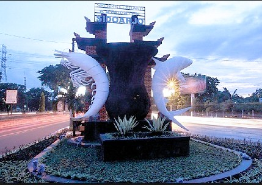
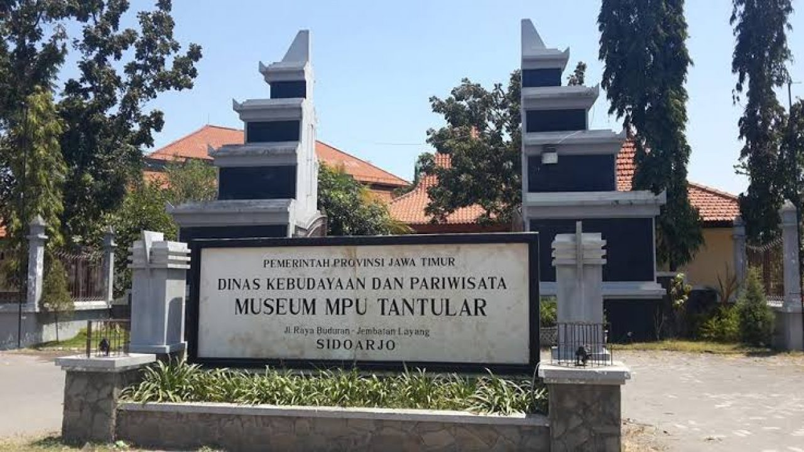
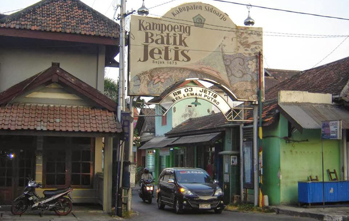
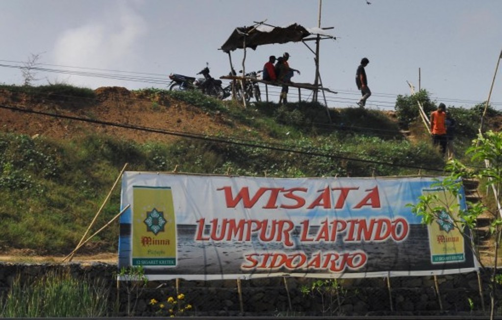

Kabupaten Sidoarjo

Sidoarjo adalah sebuah kabupaten di Provinsi Jawa Timur, Indonesia. Ibu kotanya
adalah Kecamatan Sidoarjo Kota. Kabupaten ini berbatasan dengan Kota Surabaya dan
Kabupaten Gresik di utara, Selat Madura di timur, Kabupaten Pasuruan di selatan,
serta Kabupaten Mojokerto di barat. Bersama dengan Gresik, Sidoarjo merupakan salah
satu penyangga utama Kota Surabaya.
Kabupaten Sidoarjo juga menjadi salah satu destinasi kota yang menyajikan berbagai
wisata alam yang menarik tak kalah dengan kota - kota besar di Indonesia dan juga
beberapa tempat wisata di Sidoarjo ini cukup murah dijangkau. Dengan begitu, bisa
membawa keluarga atau teman-teman untuk menikmati liburan bersama dengan menyenangkan.
Dibawah ini merupakan beberapa objek wisata yang ada pada kabupaten sidoarjo.
Museum Mpu Tantular

Wisata Museum Mpu Tantular di Sidoarjo adalah salah satu tempat wisata yang berada di
kecamatan buduran, kabupaten sidoarjo, provinsi jawa timur, negara indonesia. Wisata
Museum Mpu Tantular di Sidoarjo adalah tempat wisata yang ramai dengan wisatawan pada
hari biasa maupun hari liburan. Tempat ini sangat indah dan bisa memberikan sensasi
yang berbeda dengan aktivitas kita sehari hari.
Wisata Museum Mpu Tantular di Sidoarjo memiliki pesona keindahan yang sangat menarik
untuk dikunjungi. Sangat di sayangkan jika berada di kota sidoarjo tidak mengunjungi
wisata sejarah yang mempunyai keindahan yang tiada duanya tersebut. Museum Mpu Tantular
buka setiap hari dengan jadwal Senin - Kamis pada pukul 08.00 - 15.00 dan Jumat - Minggu
pukul 08.00 - 13.30 dengan harga tiket Dewasa seharga Rp. 4.000 dan Anak - Anak seharga
Rp 3.000.
Kampoeng Batik Jetis

Kampoeng Batik Jetis di Sidoarjo adalah salah satu tempat wisata yang terletak di Desa
Lemah Putro dan termasuk kawasan Kecamatan Sidoarjo. Kampung tersebut merupakan tempat
wisata yang ramai dengan wisatawan pada hari biasa maupun hari liburan. Tempat ini
sangat indah dan bisa memberikan sensasi yang berbeda dengan aktivitas kita sehari-hari.
Kampung ini sudah ada sejak tahun 1675, tapi mulai dikenal tahun 1950-an. Di kampung
Jetis, kita bisa berbelanja kain batik berbagai motif dan warna dengan harga dimulai
dari Rp 150.000 - 1.000.000 an. Disini pula, kita bisa belajar cara membatik yang
langsung dibimbing dan diawasi oleh perajinnya.
Lumpur Lapindo

Wisata Lumpur Lapindo di Sidoarjo adalah salah satu tempat wisata yang berada di desa
ketapang , kecamatan tanggulangin, kabupaten sidoarjo, provinsi jawa timur, negara indonesia.
Wisata Lumpur Lapindo di Sidoarjo adalah tempat wisata yang ramai dengan wisatawan pada
hari biasa maupun hari liburan. Tempat ini sangat indah dan bisa memberikan sensasi yang
berbeda dengan aktivitas kita sehari hari.
Wisata Lumpur Lapindo di Sidoarjo memiliki pesona keindahan yang sangat menarik untuk dikunjungi.
Sangat di sayangkan jika anda berada di kota sidoarjo tidak mengunjungi wisata alam yang mempunyai
keindahan yang tiada duanya tersebut. Tidak ada tiket resmi di wisata lumpur ini tapi bersiap siaplah
dengan bekal uang receh, karena setiap pengunjung akan dimintai uang masuk Rp 10.000 dan parkir
mobil Rp 10.000.